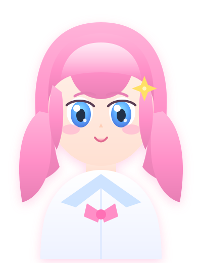

音乐
耳机不离身，喜欢在旋律里找一片安静。一首好歌能撑过一整个加班的夜晚。

你好，我是 Sora。工作日是华为的一名搬砖人，业余时间被音乐、数学和游戏填满。 喜欢在耳机里循环一首歌，把一道数学题慢慢啃下去；也喜欢在游戏里琢磨那些 精妙的机制设计。日子大多平实，但总能在这些小事里找到乐趣。
耳机不离身，喜欢在旋律里找一片安静。一首好歌能撑过一整个加班的夜晚。
喜欢它的纯粹。享受那种一步步推导、最后豁然开朗的瞬间。
玩，也研究。喜欢拆解设计者藏在地图和数值里的那点小心思。

一个抱着吉他、在社恐和舞台之间反复横跳的女孩。 喜欢她的理由大概和喜欢音乐一样 —— 安静，但一旦响起来就很用力。
「今天也要好好弹吉他。」
想聊聊音乐、数学、游戏，或者只是打个招呼？欢迎来找我～ ♡
✉ soraaa013@gmail.com